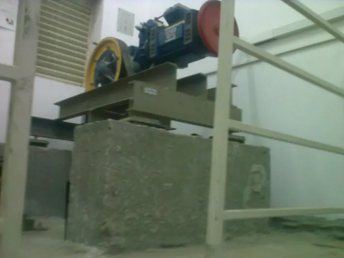
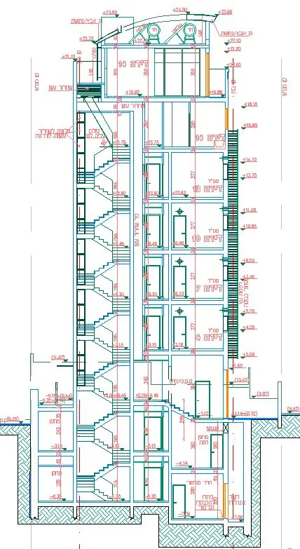

על חברת שקט
ייעוץ אקוסטי מקצועי מאז 1980, בניהולו של עמוס יפה, מהנדס אקוסטיקה מוסמך.
40 שנה של החזרת השקט
חברת "שקט" יועצים לאקוסטיקה נוסדה בשנת 1980 על ידי עמוס יפה, מהנדס אקוסטיקה מדופלם בעל ניסיון עשיר בתחום הייעוץ האקוסטי. החברה מאושרת על ידי המשרד להגנת הסביבה משנת 1980, ועובדיה מוסמכים בתחומיהם.
לאורך השנים ליווינו אלפי פרויקטים: מדירות מגורים פרטיות ועד משרדי ראש הממשלה, בנקים, בתי חולים, בתי כנסת ומתקני צה"ל. הניסיון המצטבר, לצד מערכות מדידה וניטור ייחודיות שפותחו בבית, מאפשרים לנו לספק אבחון מדויק ופתרון מעשי לכל סוג של רעש.
חלק מעבודתנו כוללת שמש כמומחים וממונים מטעם בתי משפט ברחבי הארץ, במקרים של מחלוקות בין מומחים ושאלות של מטרדי רעש מכל הסוגים.



אבני דרך
הקמת חברת שקט על ידי עמוס יפה, מהנדס אקוסטיקה, ואישור החברה על ידי המשרד להגנת הסביבה.
פיתוח מערכות ותוכנות מדידה וחישוב ייעודיות, והרחבת הפעילות למגזר הציבורי והממשלתי.
ייעוץ אקוסטי לבית הכנסת הגדול בגבעת שמואל, אחד מפרויקטי האולמות הגדולים שליווינו.
ליווי פרויקטים מורכבים עבור בנק לאומי, משרדי ממשלה, בתי חולים וצה"ל, לצד המשך השירות ללקוחות פרטיים.
ממשיכים לספק ייעוץ אקוסטי מדויק ואמין, עם דגש על מענה אישי ומהיר לכל פנייה.